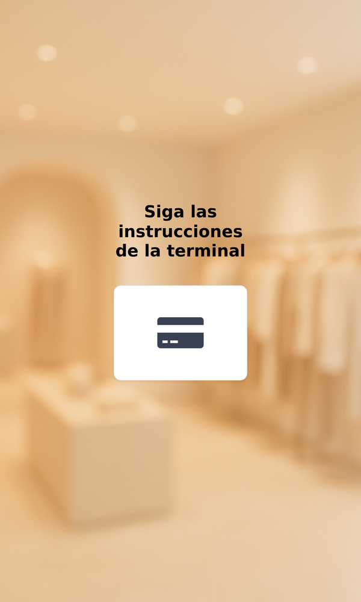

<section class="oe_container" style="font-family:Inter,Arial,sans-serif;color:#24201C">
  <div style="max-width:1080px;margin:0 auto;padding:24px 16px">
    <h2 style="font-size:32px;margin:0 0 8px;text-align:center">Kiosco de autoservicio con XPago</h2>
    <p style="text-align:center;font-size:18px;color:#776E64;margin:0 0 28px">Tu cliente pide en el kiosco de Odoo y paga en la terminal XPago de al lado; el pedido entra ya pagado. México.</p>
    <p style="text-align:center">
      
      
      
    </p>
    <p>El cobro del kiosco se deposita en la cuenta de las <b>reglas de cobro</b> de lo que pidió el cliente, o en la de la terminal. <i>Kiosk charges follow the deposit account of the payment rules.</i></p>
    <p style="margin-top:24px">Se instala sola con <b>XPago: Card Terminals in the Point of Sale</b> y el Kiosco de Odoo. Terminales y alta: <a href="https://xpago.xubax.com">xpago.xubax.com</a>.</p>
  </div>
</section>
